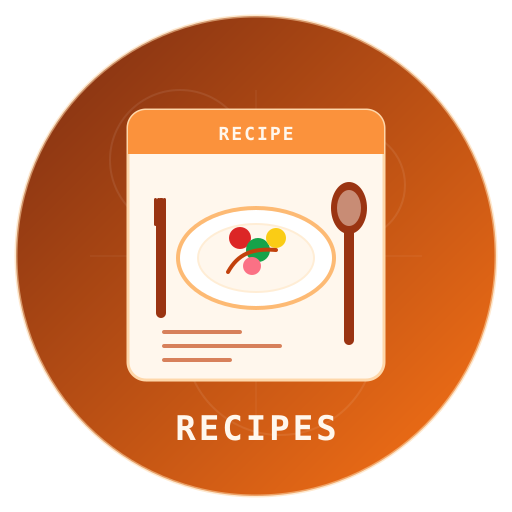

DocOps Recipes

DocOps Recipes
Create beautiful, structured cooking recipes with ingredients, steps, and notes
- What are DocOps Recipes?
- Default Look
- Warm Comfort Food Look
- Modern Dark Theme Look
- Key Components of a Recipe
- Supported Format
- Formatting Tips
What are DocOps Recipes?
The DocOps recipe macro is designed to present food recipes in a clean, structured format. It helps you document ingredients, preparation steps, timings, and notes in a way that is easy to read and visually appealing.
Recipes are ideal for:
- Cookbooks - Present recipe collections consistently
- Meal Planning - Organize weekly meals and shopping lists
- Food Blogs - Turn structured recipe text into polished documentation
- Kitchen References - Keep preparation and cooking details together
- Training Materials - Standardize recipe formatting for teams
Default Look
Warm Comfort Food Look
Modern Dark Theme Look
Key Components of a Recipe
Each recipe typically includes:
- Title - The name of the dish
- Yield - Number of servings or quantity produced
- Prep Time - Time needed to prepare ingredients
- Cook Time - Time needed to cook or bake
- Tags - Useful labels for categorization
- Summary - Short description of the dish
- Ingredients - Structured ingredient list
- Steps - Ordered preparation instructions
- Notes - Tips, variations, or serving suggestions
- Theme - Visual styling option
Supported Format
The recipe macro accepts simple key/value fields and multiline list sections.
Basic Structure
[docops:recipe]
title= Recipe Title
yield= 4 servings
prep= 15 minutes
cook= 30 minutes tags= tag1, tag2, tag3
summary= Short description of the recipe.
ingredients=
- Ingredient 1
- Ingredient 2 steps=
1. First step
2. Second step notes=
- Optional note theme= classic
[/docops]
Field Guide
| Field | Purpose |
|---|---|
title | Recipe title shown at the top |
yield | Serving size or output amount |
prep | Preparation time |
cook | Cooking time |
tags | Comma- or semicolon-separated tags |
summary | Short description of the dish |
ingredients | Ingredient list |
steps | Step-by-step cooking instructions |
notes | Extra tips, substitutions, or serving advice |
theme | Visual theme name |
Formatting Tips
- Use short, clear titles
- Keep ingredients in the order they are used
- Write each step as a single action
- Use notes for substitutions and serving suggestions
- Add tags to make recipes easier to browse
💡 Best Practice
Keep the recipe concise and scannable. A good recipe card should help the reader cook quickly without searching for key details.